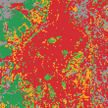
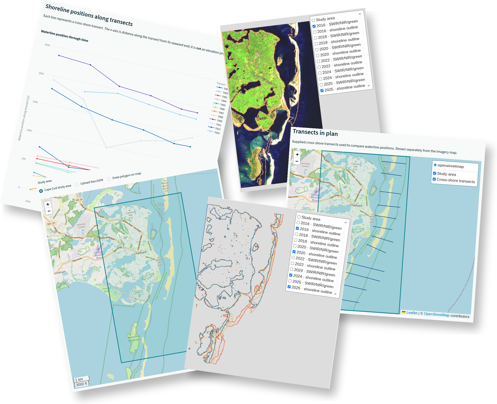

I build reproducible remote sensing pipelines in Python, combining cloud-based processing with open-source geospatial tools. Clients should own their toolchain, not rent it.
Physics and applied mathematics, a Masters and Ph.D. at James Cook University, and over a decade in remote sensing analysis for the environment: Background · Publications · Rehabilitation monitoring services
Featured interactive demonstration
Explore how satellite time-series can help track vegetation change, investigate events and organize evidence for mine rehabilitation monitoring at Curragh, Queensland.
Interactive, pinned data snapshot · Curragh only · Not a live operational monitoring service

Landsat trajectory classes, 2026, with zoom on the central mine area · rule-based, unvalidated · Curragh demonstration, pinned snapshotSeparate from the rehabilitation monitor above, these are smaller, open demonstrations of my code and analysis skills in other areas of satellite remote sensing. Every product in these repositories is regenerated from raw satellite imagery by the code. Each pipeline reruns end to end on any qualifying study area.

Broad-area water-change mapping across the Aral Sea using MODIS (2000–2024) and Google Earth Engine: annual classifications, per-year thresholds and regional water-area time series. The approach echoes published multi-sensor water-mapping research in the same study region.

An interactive Sentinel-1 flood explorer built around the 2022 Indus basin floods — choose your own area and two dates, compare radar mosaics, and export imagery for further analysis. Demonstrates the VH−VV open-water separation at work, any location, any time.

An interactive, form-based demonstration of shoreline change: cloud masking, temporal compositing, shoreline extraction and projected transect geometry — all orchestrated in Python against Google Earth Engine, with methodology documented.
Want to hire this work? See the services page.
Running, publicly accessible tools — not screenshots of them.
The national marine radiocarbon reservoir effect calculator, accompanying the published ΔR atlas. I did the modelling and built the web application. Research-backed, in daily use by the Quaternary science community.
Explore how changing sea levels reshaped Australia’s coastline over the past 125,000 years, using an interactive map built from earlier landscape-modelling work.
Code with a longer history — part of the engineering thread behind the current practice.
Reusable Perl modules for generating GRASS GIS scripts and submitting them as PBS jobs to a high-performance computing cluster — GRASS sessions, ASCII raster I/O, job scripting and configuration, from an earlier phase of scripted geoprocessing at scale.
Peer-reviewed papers — remote sensing method development for water and flood mapping, and spatial-modelling contributions to collaborative research. The public record behind the standard I bring to client work.
Direct remote sensing research and collaborative spatial modelling in archaeology, Quaternary science and hydrology — peer-reviewed papers linked to their DOIs, with other contributions listed separately. The .bib file downloads too: the bibliography is reproducible, like everything else.
 Damien O’Grady
Damien O’Grady